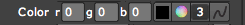

Shading tab> Shading Lights group
Shading Lights allows you to light your particles from specific points, which are defined by up to eight Light groups. Adding Particular's Lights is an important part of creating an interesting particle animation. Without Shading Lights or its Shading tab turned on, the particles are lit uniformly as if the light source is constant from all directions.
NOTE: As, mentioned, Particular has its own set of eight internal lights. Nuke's Light nodes do not by default interact with Particular in any way. If you want the lights in Particular to appear the same in the 3D scene, you need to use expressions to link the Shading Lights properties (like Position, Rotation and Color) to the lights in the Nuke scene. We have information about expressions on the 3D Nuke page.
The Shading Lights group.
Ambient Color
Lets you adjust the color of the ambient light. In comparison, the Light group> Color lets you adjust the color of each individual Light.
The default Ambient Color is black. If you are having difficulty seeing the effect of Shading Lights, change this color to white or something light.
Light 1, 2, 3... groups
Each Light group is a unique opportunity to link Particular to Nuke's 3D elements. Each Light acts like a Nuke light except it ONLY affects the specific Particular node. With Shading turned on, each active Light works as a Spot Light or Point Light to illuminate the particles. There are eight Lights in all.
Type pop-up
Sets the kind of Shading Light that is used.
There are three Type options:
Color
Sets the color of the Light. There are a few ways to edit the color.

Intensity [%]
Intensity sets the emission rate of the particles. Higher values create more particles.
Position x, y, z
Sets the position of the Multi Emitter particles. Input the X, Y and Z coordinates in their text fields.
Rotate x, y, z
Active when Type is set to Spot Light. Sets the rotation of the Light particles. Input the X, Y and Z coordinates in their text fields.
Cone Angle
Active when Type is set to Spot Light. Changes how much area is covered by the Spot Light. Higher values light a wider area.
Cone Feather [%]
Active when Type is set to Spot Light. Causes the edges of the lighting to soften. When Feather is 100%, there is a gradual fade from the edge of the cone to the center of the lit area. When Feather is 0, there is discernible line where the Light stops and starts, and all particles that are affected by the Light are lit equally.